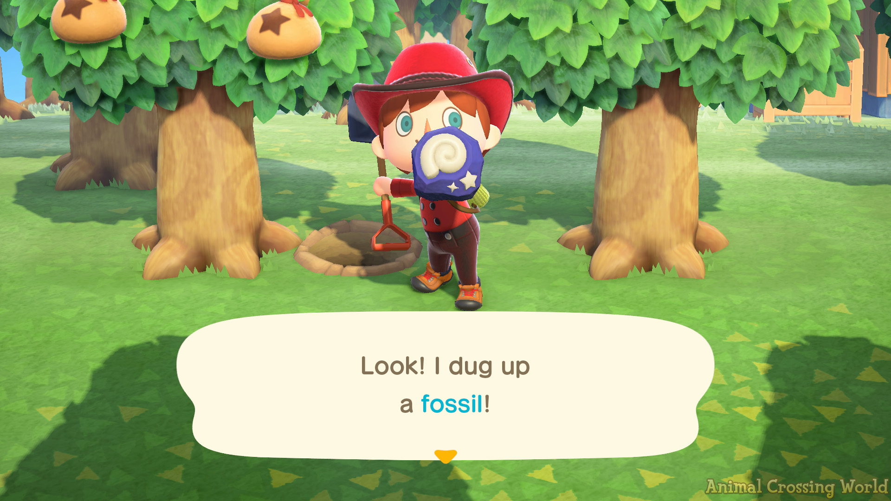

fossils!
molds!

My molds were fossils from the game Animal Crossing. They look like this:

I ended up finding a nice model on Thingiverse , so I cut straight the the meta molding!
meta-mold
(I forgot to take screenshots in Rhino during the process this week :'( but here's what I did :)The fossil model was quite small to begin with. I was a bit pressed for time and wanted to use my printer for other explorations, too, so I didn't scale them up too much - it measures about 4cm at it's longest point, so they make for cute little tokens. To make the meta-mold, I cut the model with a plane ~halfway down the model. Since my cut was flat, I drew a rectangle around one half, offset it, then extruded it to make the walls. Then I added a base box underneath. My keys are spheres offset a bit from each corner. Sprue placement was straightforward for this model, as there is a clear highest point. I created the sprue by drawing a line and using the pipe command, with a start radius of 12mm and end radius of 3mm (i.e. an inch to quarter inch taper). As reason 18742872 to check your work (& not work late at night), it turned out I oriented one half of my model wrong to begin with. Which... I did not realize until after I cast my first mold :')

silicone mold
Then I busted out the oomoo for the mold! I got oomoo 25, so I had 15 minutes of work time and 75 minutes for cure time. I mixed them 1:1 by volume in a plastic cup. The consistincy of it was suuuper satisfying. I noticed some small bubbles as I was pouring, so I shook/knocked the mold a few times. 75 minutes later, I popped these molds out:
casting
I had some plaster of paris and some hydro-stone - I started with the PoP. I mixed 2 parts PoP to 1 part water by volume in a plastic cup, and stirred for about 2 minutes. The consistency was a bit more watery than I was expecting after mixing, but decided to go ahead and cast, and it seemed to work! I added some rubber bands around the silicone for stability. I cast 2 molds with the plaster of paris. After 30 minutes, it still felt a bit watery, so I left them to dry overnight.For my other 2 molds I used the hydro-stone. I found that the ratio should be 32 parts powder to 100 parts water by weight. But I... do not own a scale. Some discussion online seemed suggest that hydro-stone is relatively forgiving with it's ratio and some use 3 parts powder to 1 part water out of convenience, so I went ahead and gave it a shot. The consistency this time was a bit thicker. Thankfully, the ratio seemed to work:

The hydro-stone is significantly stronger; the PoP will give and break a bit if I press too hard. For both, I sanded the mold seam a bit and this helped clean it up. I painted one of the hydro-stone casts for good measure: